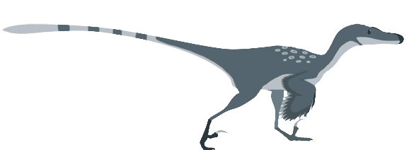
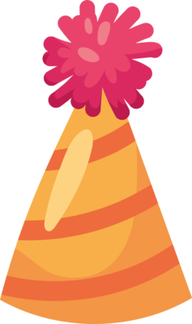
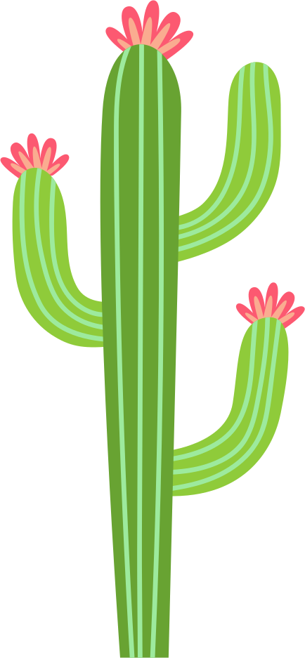
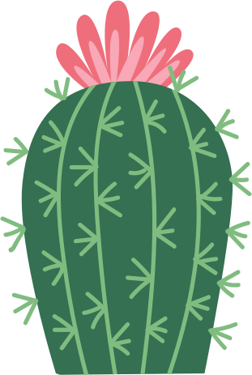

Raptor Runner
Jump the cacti. Don't let the raptor die.
A homage to the Google "No Internet" idle game.
★ Personal best: 0
Tip: press Space or tap to jump · Esc for menu
Tip: Tap to jump




Jump the cacti. Don't let the raptor die.
A homage to the Google "No Internet" idle game.
★ Personal best: 0
Tip: press Space or tap to jump · Esc for menu
Tip: Tap to jump
Press Enter to restart